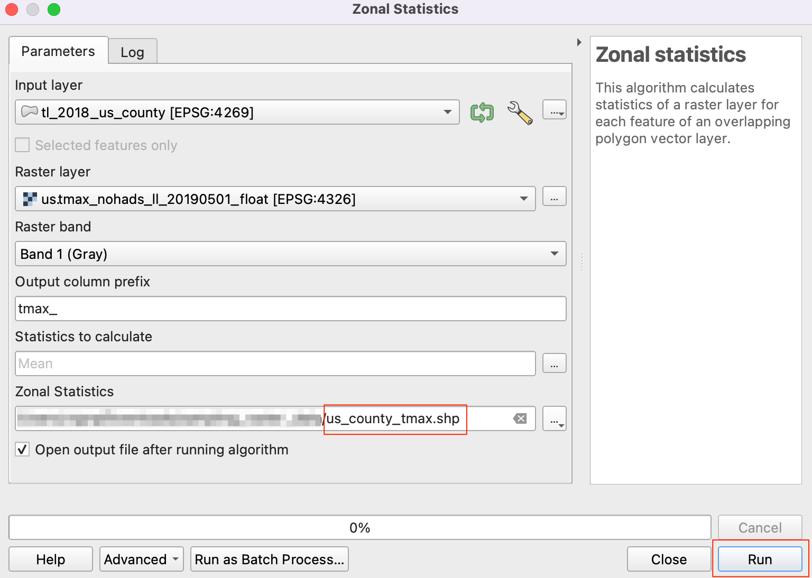
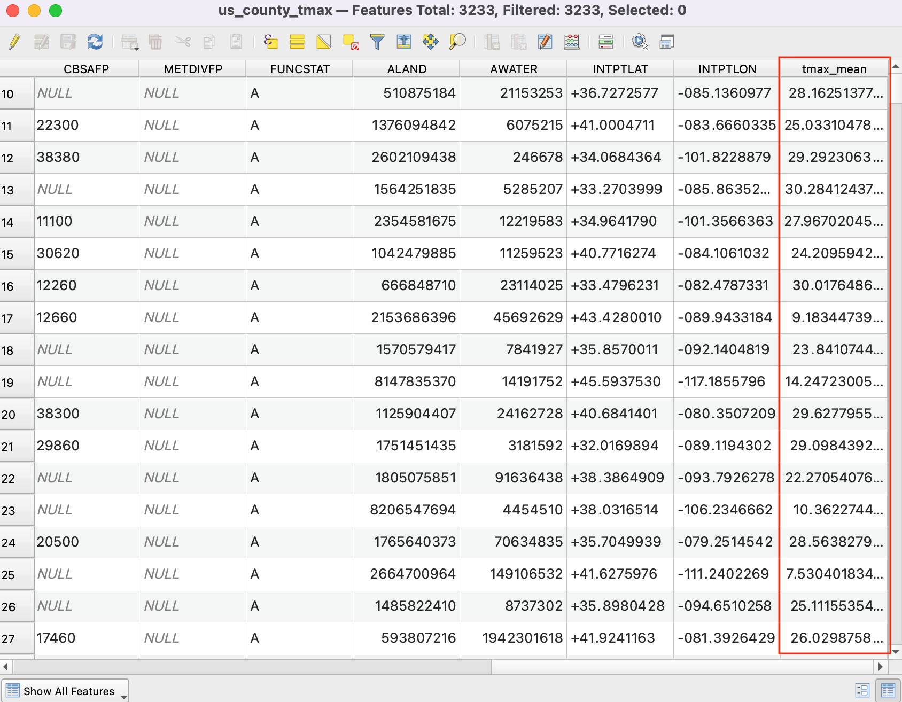

Sampling Raster Data using Points or Polygons (QGIS3)¶
Many scientific and environmental datasets come as gridded rasters. Elevation data (DEM) is also distributed as raster files. In these raster files, the parameter that is being represented is encoded as the pixel values of the raster. Often, one needs to extract the pixel values at certain locations or aggregate them over some area. This functionality is available in QGIS via processing algorithms. Sample raster values for point layers and Zonal Statistics for polygon layers.
Overview of the task¶
Given a raster grid of daily maximum temperature in the continental US, we need to extract the temperature at a point layer of all urban areas and calculate the average temperature for a polygon layer of each county in the US.
Other skills you will learn¶
Select and remove multiple layers from QGIS Table of Contents.
Get the data¶
NOAA’s Climate Prediction Center provides GIS data related to temperature and precipitation in the US. Download the latest grid file for maximum temperatures. The file will be named us.tmax_nohads_ll_{YYYYMMDD}_float.tif
We will use a CSV file from 2018 US Gazetteer representing urban areas in the US. Download the Urban Areas Gazetteer File.
US Census Bureau provides TIGER/Line Shapefiles. You can visit the FTP site and download Census Tracts Shapefile.
For convenience, you may directly download a copy of the datasets from the links below:
us.tmax_nohads_ll_20190501_float.tif
Data Sources: [NOAACPC], [USGAZETTEER] [TIGER]
Procedure¶
Unzip and extract both
2018_Gaz_ua_national.zipandtl_2018_us_county.zipto a folder on your computer. Open QGIS and locate theus.tmax_nohads_ll_20190501_float.tiffile in the QGIS Browser drag it to the canvas.

You will see a new raster layer
us.tmax_nohads_ll_20190501_floatloaded in the Layers panel. This raster layer contains the maximum temperature recorded at each pixel in degrees Celsius. Next we will load the urban areas point file. This file comes as a text file in the Tab Separated Values (TSV) format. Click the Open Data Source Manager button on the Data Source Toolbar.

Switch to the Delimited Text tab. Click the ... button next to File name and specify the path to the text file you downloaded. In the File format section, select Custom delimiters and check Tab. Select
INTPTLONGas the X field andINTPTLATas the Y field. Click Add and then Close.

A new point layer
2018_Gaz_ua_nationalwill be loaded in the Layers panel. Now we are ready to extract the values from the raster layer at these points. Go to .

Search and locate the algorithm. Double-click to launch it.

Select
2018_Gaz_ua_nationalas the Input Point Layer. Selectus.tmax_nohads_ll_20190501_floatas the Raster Layer to sample. Expand the Advanced parameters and entertmaxas the Output column prefix. Click Run. Once the processing finishes, click Close.

A new layer
Sampled Pointswill be loaded in the Layers panel. Select the Identify tool in the Attributes Toolbar and click on any point. You will see the attributes displayed in the Identify Results panel. You will see a new attribute called tmax_1 added to each feature. This is the pixel value of the raster layer extracted at the point's location. The 1 represents the band number of the raster. If the raster layer had multiple bands, you would see multiple new columns in the output layer.

First part of our analysis is over. Let's remove the unnecessary layers. Hold the Shift key and select
Sampled Pointsand2018_Gaz_ua_nationallayers. Right-click and select Remove to remove them from QGIS. When prompted for Remove 2 legend entries?, select OK.

Now we will use the counties layer to sample the raster and calculate average temperature for each county. Locate the
tl_2018_us_county.shpfile in the QGIS Browser drag it to the canvas.

A new layer
tl_2018_us_countywill be loaded to the Layers panel. Go to .

Search and locate the algorithm and double-click to launch it.

Select
us.tmax_nohads_ll_20190501_floatas the Raster layer andtl_2018_us_countyas the Vector layer containing zones. Entertmax_as the Output column prefix. Click the ... next to Statistics to calculate.

Select only the
Meanvalue and click OK.

Now, click on the ... next to Zonal Statistics and select Save to File option to save the output.

Browse to the folder where you want to save the output. Save the output layer as
us_county_tmax.shp. Click Run to start the processing. The algorithm may take a few minutes to complete and you will see the output layer added as soon as the processing finishes. Click Close.

Right-click the
us_county_tmaxlayer, and select Open Attribute Table.

You will see a new column called
tmax_meanadded in the attribute table. This contains the average temperature value extracted over the polygon for each feature. There are some null values because those counties (belonging to Alaska, Hawaii and Puerto Rico) are outside of the raster layer's extent.

If you want to give feedback or share your experience with this tutorial, please comment below. (requires GitHub account)